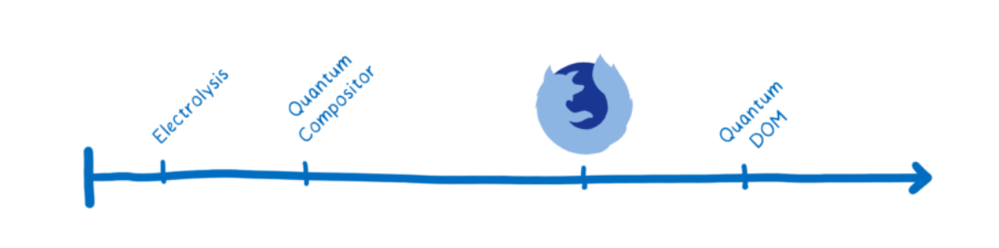

Rust, Servo and
Firefox Quantum
The history through a personal tale
I'm Stefania Delprete
astrastefania on LinkedIn, Twitter, GitHub...
Once upon a time...
July 2010
Rust, a personal project by Graydon Hoare, became officially sposored by Mozilla Research and launched at the Mozilla Summit 2010.
Fast forward, few years later...
May 2015
Rust programming language reached its 1.0 stability milestone!
Why?
safety
speed
concurrency
July 2015
In the meantime I landed in Berlin where I attended my first Mozilla event and ended up working on a bug with David Bryant.
September 2015
Three friends in a pub ready to change the world...
November 2015
First Mozilla Berlin Tech Weekend where I really discover Servo, and Rust, with Till Schneidereit talk "Mozilla's Parallel and Safe Next-Generation Browser Engine".
"Rust makes parallelization feasible"
February 2016
And than it was time to play with Rust and Servo!
May 2016
Servo and Rust communities kept expanding, there were projects to test Servo in HTML and frequent Rust MeetUp events and study groups
August 2016
Rust is used for the first time in Firefox 48 to fix an MP4 metadata parser.
The Oxidation Project, integrating Rust code in and around Firefox, became real!
September 2016
After the View Source I went back in Italy and started exploring the local open source scene.
October 2016
David Bryant announced the Quantum Project:
"Quantum is our effort to develop Mozilla's next-generation web engine and start delivering major improvements to users by the end of 2017. [...] Quantum has a number of components, including several adopted from the Servo project."
The quantum project...
... and its timeline
January 2017
I'm back in Berlin for ten intense days, talking about Quantum, data science and comparing browser page load time.April 2017
First part of the Quantum Project in Firefox 53: the Quantum Compositor!
Quantum Compositor
"Compositors are responsible for flattening all of the various elements on a webpage into a single image to be drawn on the screen."
" Quantum Compositor moved the compositor to its own process. The biggest win here was that it made Firefox more stable. Having a separate process means that if the graphics driver crashes, it won’t crash all of Firefox."
Quantum DOM
"The goal of the Quantum DOM project is to eliminate jank caused by background tabs. One of the main ways we intend to do this is to run each tab in its own cooperatively scheduled thread."
November 2017
The CSS engine Quantum CSS (known as Stylo), first major component from Servo, landed on Firefox 57!
Quantum CSS
"With Stylo, the work of CSS style computation is fully parallelized across all of the CPU cores. Stylo uses a technique called work stealing to efficiently split up the work between the cores so that they all stay busy."
December 2017
Oxidation Meeting in Austin
Compile speed and memory usage
Cross-language inlining
February 2018
"The WebRender is Servo's next-generation render optimized for GPU rendering". It expected to land in late spring, it can now be enabled since the Firefox 60!
Check out the latest WebRender newsletters
March 2018
Rust 1.24.1
Firefox 59
Firefox 61 (Nightly)
Credits and articles
Drawings by Lin Clark
Why Rust is the Most Loved Language by Developers
Curiosities through 5-year old tickets: Rust in Gecko and in Tor?
And now will Tor be written in Rust?Designing for performance: A data-informed approach for Quantum development
Entering the Quantum Era—How Firefox got fast again and where it’s going to get faster
Resources
The Quantum Project and how to get involved
Quantum Up Close: What is a browser engine?
Rust Torino
Oggi nasce il MeetUp di Rust Torino!
Incontriamoci e discutiamo che prossimi incontri.
"E questo è Quantum!" ;)
contact@stefaniadelprete.com
or astrastefania on